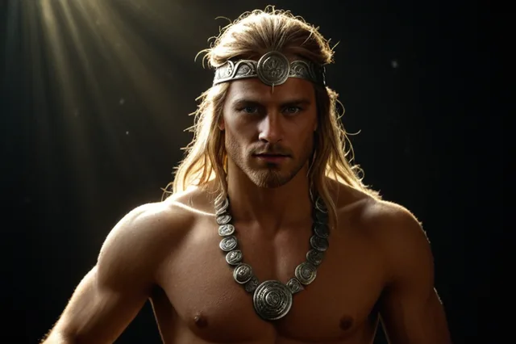

Локи
Локи (Lóki) — хитрый бог-трикстер
Lóki
Локи ("Спор") — бог-трикстер, сын великанов Фарбаути и Лауэй. Несмотря на происхождение, является приёмным братом Одина и живёт в Асгарде. Из-за его козней погиб Бальдр, за что Локи был прикован к скале и будет сражаться против богов в Рагнарёке.
Происхождение: Йотунхейм, род великанов
Германическое имя: Lôhaz
Роль: бог-трикстер, предатель богов
Семья
- Отец: Фарбаути
- Мать: Лауэй
- Жена: Анграбода
- Дети: Фенрир (волк), Ёрмунганд (змей), Хель
- Брат клятвы: Один
Легенды
- Помог богам, но также и навредил своими кознями
- Убил Бальдра, подсовывая Омелу Фригг
- Был пойман и наказан богами
- Прикован к скале, капля яда падает на его лицо
- В Рагнарёке возглавит армию великанов против богов
Источники
Семья и род
ᚱ